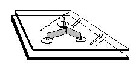
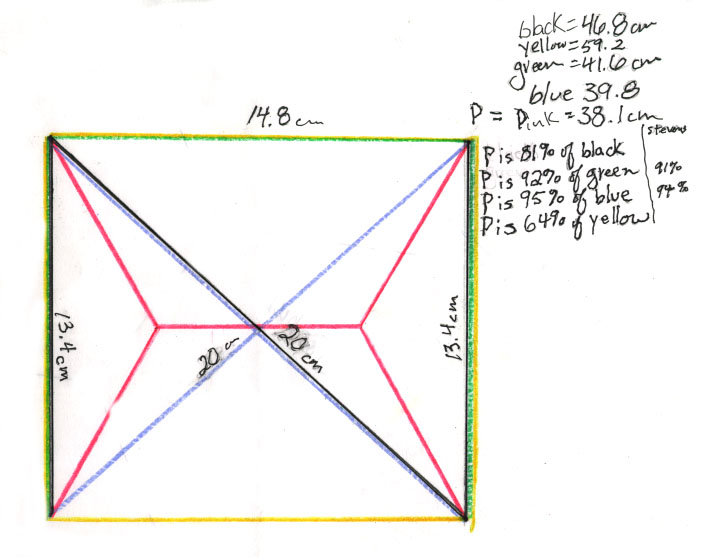

Math from soap bubbles (not for blowing)
Dallas observes the bubbles in the tetrahedron.
Two ways to make the bubbles:
1. Wire shapes with handles: a tetrahedron, a cube, and a ring (~5 in. diameter) with a loop of string attached.
2. Two clear plastic squares or plates, each ~5"x5" and 1/4" thick with 3 tacks (to begin with), head down, between the plates (get a box of tacks- 1/2" head, 1/2" point which are larger than regular tacks).
Procedure:
Make the bubble mixture, keeping the top fairly clear of small bubbles. Keep the bucket covered when not in use to keep out bugs. Keep a bath towel under the bucket so kids can dry their hands.
Just dip the shape in the bubble-water slowly, pulling it out slowly, and observe the resulting bubbles within the shapes. The bubbles formed are beautiful!
Students immediately want to make their own shapes, including the standard ones as well as non-standard ones like 'stars' and 'spheres'..very interesting! And they were anxious to show their parents what happens, as well.
Manipulating the plates takes a little time to get the technique to get 'clean' bubbles. Put three tacks head down between the plastic plates. Dip the plates at an angle down into the water. Then come out of the water at an angle up, and slowly. See the diagram below which show the bubbles formed between the plates with 3 tacks.

It turns out that that the bubbles formed are vertical rectangles, 120o apart.
Some student work as a result of "playing" with the bubbles:
Patricia and Joe who did the work below during the summer of 2000, will take geometry in the Fall of 2000. Other students ages 9 and up did similar work.
Patricia drew the 3-tack bubble diagram below right. She started with a point at the center, drew lines off at 120o and at arbitrary distances put the points that represented the tacks, forming the picture shown above within the plates. She then connected the three points in a triangle. She measured the distances for the three paths between the "tacks" sketched at the left.
Patricia found the bubble path, the inverted Y, was 100 mm and was 62% of the triangle perimeter of 169 mm., and 82% of the inverted V length of 112 mm. Stevens in his book "Patterns in Nature" on p.171, shows 58% and 87% for these same corresponding path lengths. Patricia's data was very good, with errors of only about 7% and 6%, respectively. Fine job, Patricia!
The following is Maggie's work for the three tacks:
The 4-tack bubble looked like the PINK path below, drawn by Joe. He started with a line segment, came off the endpoints at 120o then marked the 4 points for the tacks. He measured the paths and found the bubble path to be 92% of the green path (3-sides of the rectangle) and 95% of the blue diagonal path. Stevens shows 91% and 94% for the corresponding %'s, with errors here of only 1%! Very fine job, Joe!

Don asked Joe if he could start with the 4 tacks and make the bubble path from those. They talked about starting with two points P1 and P2 first, then locating a point that made an angle of 120o with these points. He found one point, then proceeded to find many. The locus (or path) of these points he found was a curve. Then he realized there would be other points that would be mirror images of the first ones. These were the ones to the right of P2. Don realized the curve could not be a circle with diameter P1P2, because a circle would contain points that made an angle of 90o with P1P2 as diameter.
Don found the locus of the points (x,y), that make an angle of 120º with the points P1 and P2. The three vertices of the triangle are (x,y), P1 and P2. He used the distance between P1 and P2 as 1, and the coordinates of P1 as (0,1/2) and P2 as (0, -1/2). He used the law of cosines relating 2 sides of a triangle and the angle between them to the third side (P1-P2), that is opposite the 120º angle. The law of cosines is
c2 = a2 + b2 - 2abcos C
Here C= 120º and cos 120º = -1/2
a = the distance from (x,y) to P1 = Sqrt((x-0)2 + (y-1/2)2 ) and
b = the distance from (x,y) to P2 = Sqrt((x-0)2 + (y + 1/2)2 ) and
c = 1= the distance from P1 to P2
Substituting into the law of cosines and doing a lot of algebra (the first try about a month ago he got discouraged with) the equation
x4 + 2x2y2 + x2/2 + y4 - y2/2 + 1/16 =
4x4 + 8x2y2 - 2x2 + 4y4 - 2y2 + 1/4
When Don graphed this equation in Derive, he got
The middle portion of this graph, looks very much like Joe's diagram; the two "pieces" he had must be parts of the two ellipses. (When Don simplified the equation above and graphed that equation, he did not get two ellipses, only one! So there is still a question in his mind about that.)
John's 5-tack problem
Materials needed for do
the bubbles
A bucket with capacity of ~ 4 gal.
For bubble mixture: Liquid soap, glycerine, and water. Try to keep little bubbles off the top of the water.
Wire for students to make the shapes:18 or 19 gauge copper or steel galvanized wire, about 50 feet to start with. To make the 'standard shapes', Don used #8 gauge bare copper wire. This size is better, but it is hard to find.
Enjoy!
_____________________________________________
Reference: "Patterns in Nature" by Peter S. Stevens; Little, Brown & Co.; 1974
=========================================